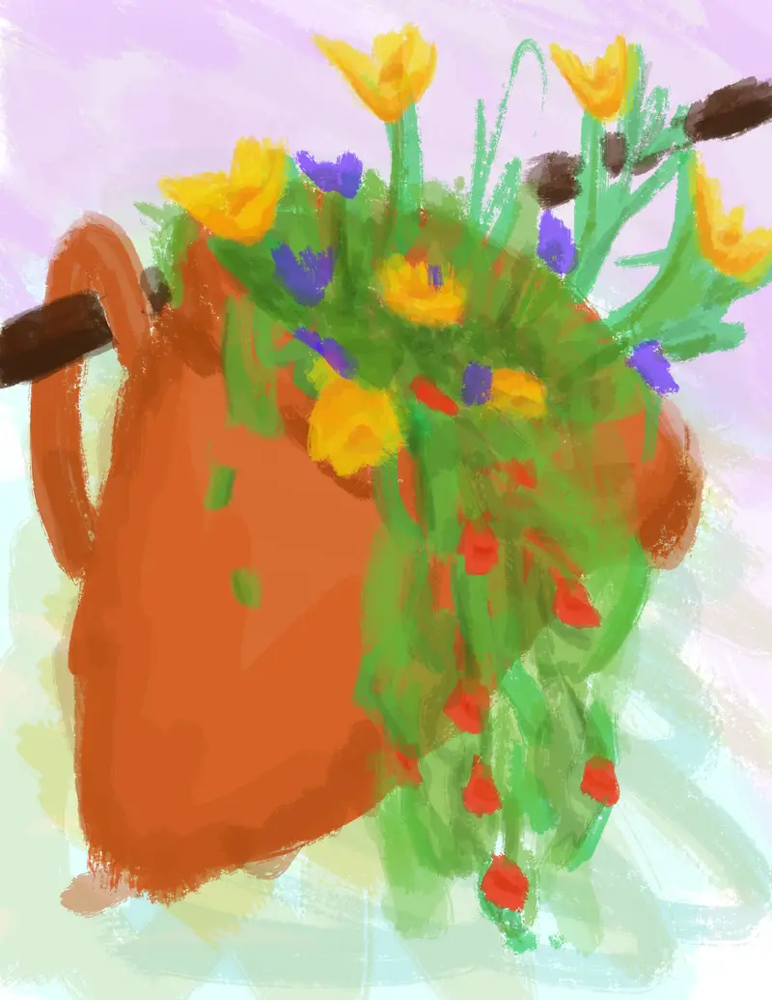
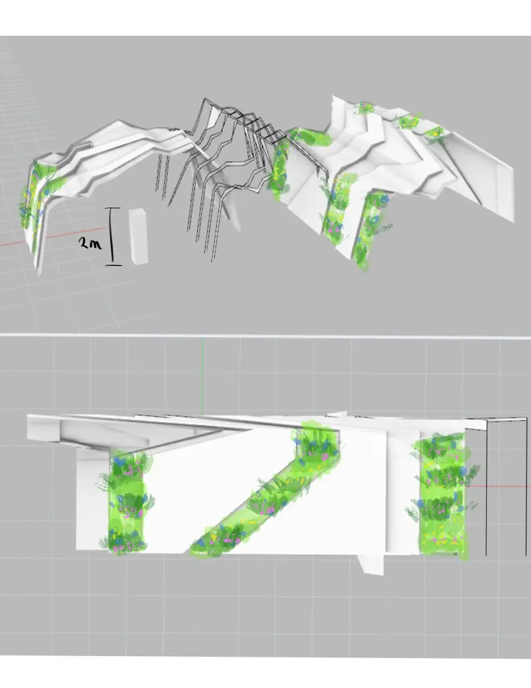
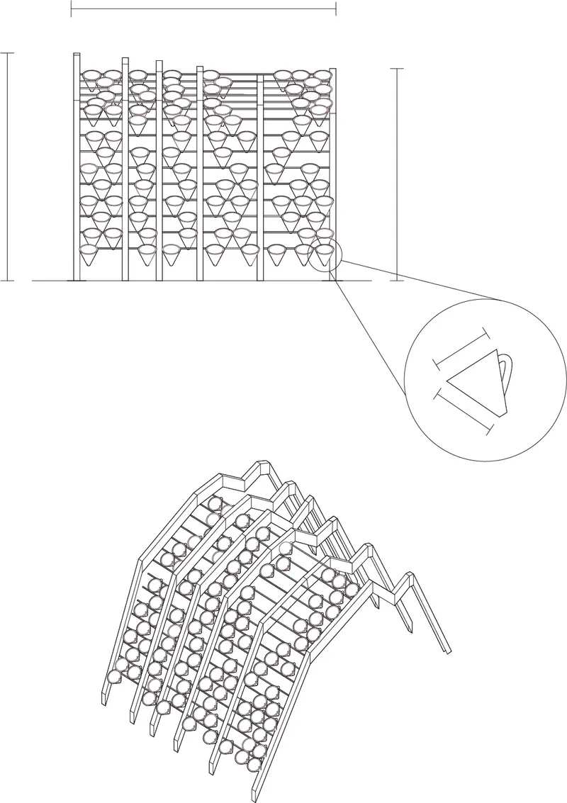
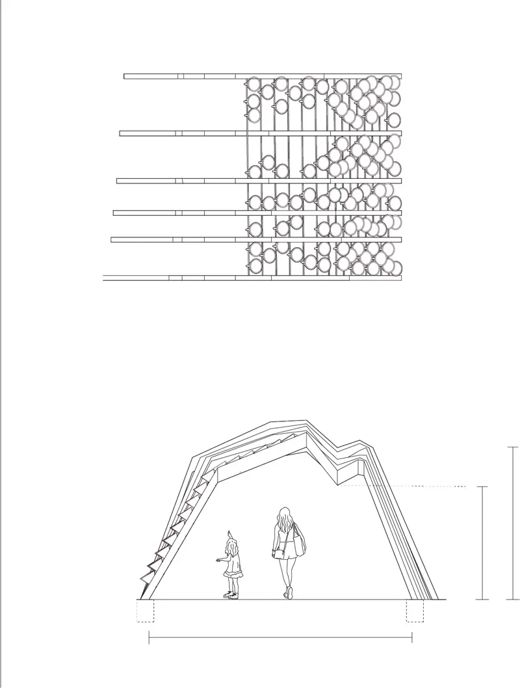
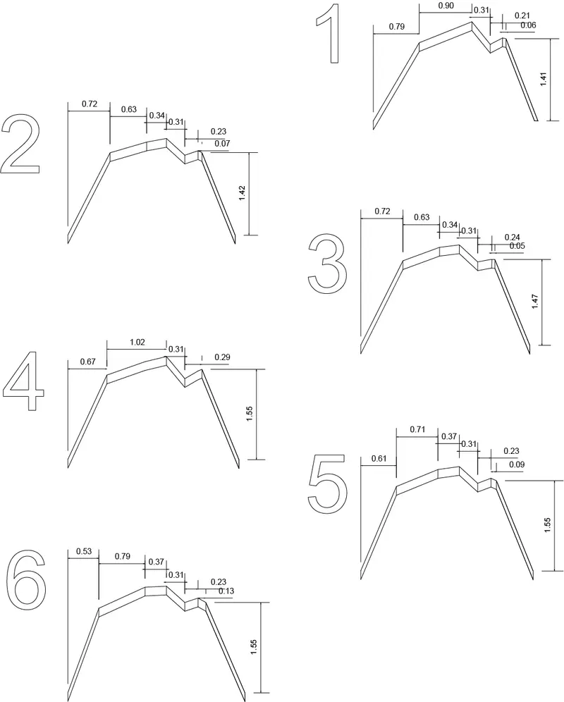
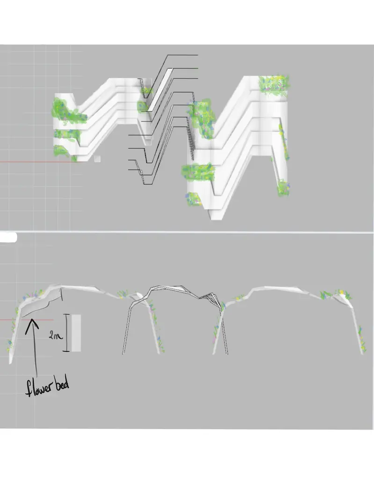
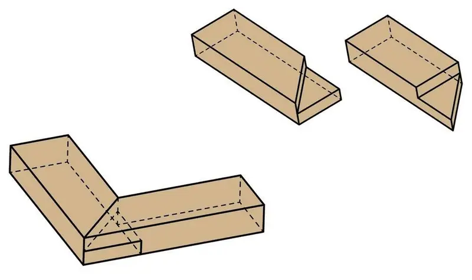

Montagnes vertes
Six pine structures that trace the outline of the Franco-Swiss mountains, with pots of local wildflowers hidden in their slopes.
- Call
- Appel à candidature Jeune Création, Annecy Paysages 2022
- Team
- Julie McIntosh & Andrea McIntosh (architecture)
- Proposed site
- Parc Charles Bosson, Annecy
- Budget
- ≈ €3,000

About the project
Our design set out to celebrate the serene mountains of Haute-Savoie. Six complementary but separate pine structures outline the Franco-Swiss Alps, held together by dowels and mitred half-lap joints. Hidden in their slopes are pots of wildflowers that grow on the very mountains around Lake Annecy.
The playful design invites people to come up close and learn about the variety of wild plants that can be safely grown in an urban environment. Building on Franco-Swiss research into reintroducing local plants, we saw an opportunity for art, sustainability and learning to come together: to encourage conversation, bring wonder and spark a deeper appreciation for biodiversity.



Research
Terracotta planters suspended by dowels would hold wildflowers of the region: rhododendrons, myrtilles, yellow and blue gentians, the Neydens tulip, mountain arnica and blue thistle, all growing seasonally with little maintenance.
The design was built around the Fleurs locales program, three years of research by France Nature Environnement Haute-Savoie into regrowing local wildflowers in the Franco-Swiss regions. We spoke with their education lead, who confirmed that growing and sourcing these wildflowers was achievable, and proposed working with FNE to establish an accessible wildflower garden for visitors and locals alike.





About us
Andrea and I are Indigenous, francophone sisters with European roots, from Sudbury, Ontario. Growing up by the lake, our work has been shaped by the ebb and flow of nature’s resilience, and explores the relationship between people, tradition and nature. At the time, Andrea was completing her Master of Architecture at Carleton University and I was finishing Aboriginal Visual Arts at the New Brunswick College of Craft and Design.